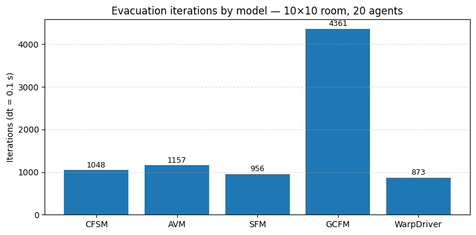

Operational models#
An operational model governs how individual agents move: it translates the desired direction (supplied by the routing logic) into an actual velocity at every time step, while respecting the geometry and other agents.
JuPedSim ships several operational models:
Model |
Class |
Reference |
|---|---|---|
Collision-Free Speed Model |
|
Tordeux et al. |
Collision-Free Speed Model V2 |
|
|
Collision-Free Speed Model V3 |
|
|
Anticipation Velocity Model |
|
|
Social Force Model |
|
Helbing & Molnár |
Generalized Centrifugal Force Model |
|
Chraibi et al. |
Warp Driver Model |
|
You select a model when constructing the Simulation:
sim = jps.Simulation(model=jps.CollisionFreeSpeedModel(), geometry=...)
Each model has a matching agent-parameters class (e.g.
jps.CollisionFreeSpeedModelAgentParameters) that you use when adding agents.
See also: Getting started and object model concepts.
Swapping a model#
The only things that change between models are:
The
model=argument passed tojps.Simulation.The matching
*AgentParametersclass used insim.add_agent(...).
Everything else—geometry, stages, journeys—stays the same.
import pathlib
import jupedsim as jps
import shapely
geometry = shapely.Polygon([(0, 0), (10, 0), (10, 10), (0, 10)])
start_positions = jps.distributions.distribute_by_number(
polygon=shapely.Polygon([(0.5, 0.5), (3, 0.5), (3, 9.5), (0.5, 9.5)]),
number_of_agents=20,
distance_to_agents=0.6,
distance_to_polygon=0.3,
seed=1,
)
print(f"Agent start positions: {len(start_positions)} agents")
def run_with(model, make_agent_params, tag):
"""Run the evacuation scenario with the given model and return (iteration_count, traj_path)."""
traj = pathlib.Path(f"models_{tag}.sqlite")
sim = jps.Simulation(
model=model,
geometry=geometry,
trajectory_writer=jps.SqliteTrajectoryWriter(
output_file=traj, commit_every_nth_write=1
),
)
exit_id = sim.add_exit_stage([(9, 4), (10, 4), (10, 6), (9, 6)])
journey_id = sim.add_journey(jps.JourneyDescription([exit_id]))
for pos in start_positions:
sim.add_agent(make_agent_params(journey_id, exit_id, pos))
while sim.agent_count() > 0 and sim.iteration_count() < 10_000:
sim.iterate()
return sim.iteration_count(), traj
Agent start positions: 20 agents
results = {}
traj_cfsm = None
# Collision-Free Speed Model
try:
iters, traj = run_with(
jps.CollisionFreeSpeedModel(),
lambda j, s, p: jps.CollisionFreeSpeedModelAgentParameters(
journey_id=j, stage_id=s, position=p, radius=0.2, desired_speed=1.2
),
"cfsm",
)
results["CFSM"] = iters
traj_cfsm = traj
print(f"CFSM: {iters} iterations")
except Exception as e:
print(f"CFSM skipped: {e}")
# Anticipation Velocity Model
try:
iters, traj = run_with(
jps.AnticipationVelocityModel(),
lambda j, s, p: jps.AnticipationVelocityModelAgentParameters(
journey_id=j,
stage_id=s,
position=p,
desired_speed=1.2,
radius=0.2,
anticipation_time=1.0,
reaction_time=0.3,
),
"avm",
)
results["AVM"] = iters
print(f"AVM: {iters} iterations")
except Exception as e:
print(f"AVM skipped: {e}")
# Social Force Model
try:
iters, traj = run_with(
jps.SocialForceModel(),
lambda j, s, p: jps.SocialForceModelAgentParameters(
journey_id=j,
stage_id=s,
position=p,
desired_speed=1.2,
radius=0.3,
orientation=(1.0, 0.0),
),
"sfm",
)
results["SFM"] = iters
print(f"SFM: {iters} iterations")
except Exception as e:
print(f"SFM skipped: {e}")
# Generalized Centrifugal Force Model
try:
iters, traj = run_with(
jps.GeneralizedCentrifugalForceModel(),
lambda j, s, p: jps.GeneralizedCentrifugalForceModelAgentParameters(
journey_id=j,
stage_id=s,
position=p,
desired_speed=1.2,
orientation=(1.0, 0.0),
),
"gcfm",
)
results["GCFM"] = iters
print(f"GCFM: {iters} iterations")
except Exception as e:
print(f"GCFM skipped: {e}")
# Warp Driver Model
try:
iters, traj = run_with(
jps.WarpDriverModel(),
lambda j, s, p: jps.WarpDriverModelAgentParameters(
journey_id=j,
stage_id=s,
position=p,
desired_speed=1.2,
radius=0.15,
orientation=(1.0, 0.0),
),
"wd",
)
results["WarpDriver"] = iters
print(f"WarpDriver: {iters} iterations")
except Exception as e:
print(f"WarpDriver skipped: {e}")
print("\nAll runs complete.")
CFSM: 1048 iterations
AVM: 1157 iterations
SFM: 956 iterations
GCFM: 4361 iterations
WarpDriver: 873 iterations
All runs complete.
import matplotlib.pyplot as plt
import pandas as pd
df = pd.DataFrame(
{
"Model": list(results.keys()),
"Evacuation iterations": list(results.values()),
}
).set_index("Model")
display(df)
fig, ax = plt.subplots(figsize=(8, 4))
bars = ax.bar(df.index, df["Evacuation iterations"])
for bar in bars:
h = bar.get_height()
ax.text(
bar.get_x() + bar.get_width() / 2,
h + 20,
str(h),
ha="center",
va="bottom",
fontsize=9,
)
ax.set_ylabel("Iterations (dt = 0.1 s)")
ax.set_title("Evacuation iterations by model — 10×10 room, 20 agents")
ax.grid(axis="y", linestyle="--", alpha=0.4)
plt.tight_layout()
plt.show()
| Evacuation iterations | |
|---|---|
| Model | |
| CFSM | 1048 |
| AVM | 1157 |
| SFM | 956 |
| GCFM | 4361 |
| WarpDriver | 873 |

from jupedsim.internal.notebook_utils import animate, read_sqlite_file
if traj_cfsm is not None and traj_cfsm.exists():
trajectory_data, walkable_area = read_sqlite_file(traj_cfsm)
animate(trajectory_data, walkable_area, title_note="CFSM")
else:
print("CFSM trajectory not available (model was skipped).")
Try one change#
Increase the desired speed or tighten the agent radius and re-run a single model to see how it affects the evacuation iteration count:
run_with(
jps.CollisionFreeSpeedModel(),
lambda j, s, p: jps.CollisionFreeSpeedModelAgentParameters(
journey_id=j, stage_id=s, position=p,
radius=0.15, # tighter agents
desired_speed=2.0, # faster movement
),
"cfsm_fast",
)
You can also add CollisionFreeSpeedModelV2 or CollisionFreeSpeedModelV3 to the
results dict and re-plot.
See also#
Getting started — basic simulation setup
Agent Distributions — placing agents
jupedsim-scenarios — systematic model comparison via parameter sweeps